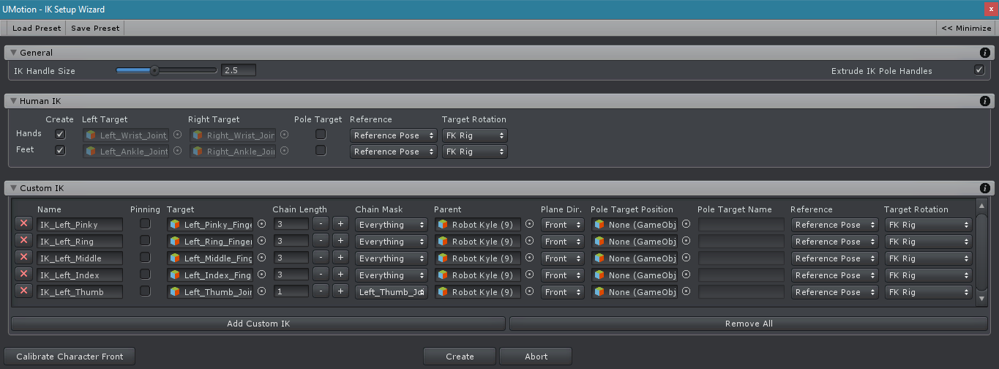
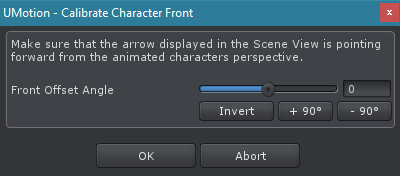
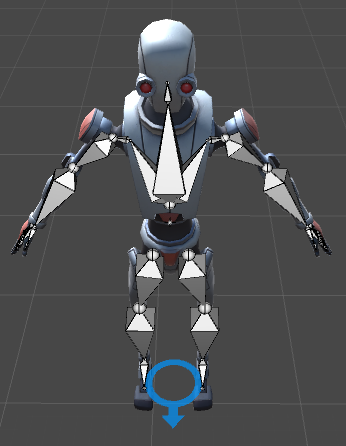
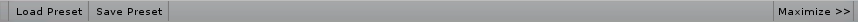
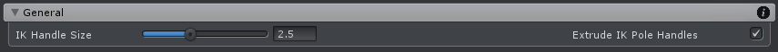
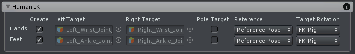
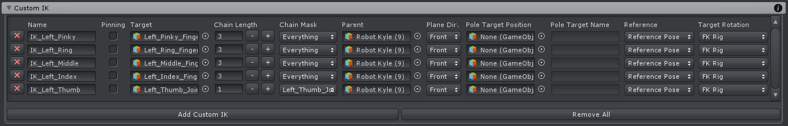

IK Setup Wizard Professional
The IK Setup Wizard greatly simplifies creating Inverse Kinematics rigs. It supports creating rigs for any type of character. Creating a simple IK rig for human like characters is especially easy.
If you are new to the Inverse Kinematics topic, please check out the Inverse Kinematics Constraint chapter first.
All settings of this wizard are stored in the UMotion project. It is possible to create (usually with changed settings) an IK rig several times using the wizard. Existing transforms will be updated. If names or parents have been changed the old transforms won't be deleted automatically.
IK Setup Wizard - Dialog
Calibrate Character Front
This dialog is always shown when the IK Setup Wizard is started the first time. In order for the IK Setup Wizard to function properly it is necessary that the wizard know which direction "forward" is from the animated characters perspective. In the Scene View an arrow is displayed at the characters root position. If this arrow is not pointing forward from the characters perspective, use the Front Offset Angle setting to make it look forward.
This dialog can be accessed anytime again by pressing the Calibrate Character Front button in the IK Setup Wizard window.
| 
Calibrate Character Front - Dialog |

Character Front Visualization - Scene View |
Menu Bar
IK Setup Wizard - Menu Bar
It is possible to save the wizard settings as a preset and load this preset from within a different project. Thus using presets can speed up the workflow as it's possible to share the same settings across different models.
Presets are saved as *.asset files. Make sure to properly name them as presets or place them in a "presets" folder in order not to get confused with UMotion project files (which are also stored as *.asset).
When working with generic/legacy characters or with custom IK's, you have to be aware that bones are stored using their transform hierarchy path. That means that when a preset is referring to e.g. "Root/Hips/UpperLeg" and there is no such bone in the project where the preset is loaded, a warning message will occur and that specific field will be empty.
The Maximize button is useful when working with custom IK's as it increases the window size so that a complete row of the custom IK window can be displayed.
General
The Handle Size defines the size of the transforms that are created as IK handles.
When Extrude Pole Handle is enabled created pole handles will be slightly extruded in the direction the IK plane is pointing to.
IK Setup Wizard - General
Human IK
The human IK category can be used to create an IK rig for humanoid, generic and legacy generic characters. It automatically creates IK chains for hands and feet with IK pinning functionality. When the project is of type humanoid, the IK targets are detected automatically. When the project is of type generic or legacy generic, it is necessary to assign the hand and foot bones manually to the appropriate fields.
IK Setup Wizard - Human IK
| Item | Description |
|---|---|
| Create | (Only shown in humanoid projects!) Enables/disables the creation of the appropriate IK configuration. |
| Left Target | The joint of the left hand/foot that should be controlled by IK. Detected automatically in humanoid projects. More information: IK Constraint |
| Right Target | The joint of the right hand/foot that should be controlled by IK. Detected automatically in humanoid projects. More information: IK Constraint |
| Parent | The parent the created IK handles should have. |
| Twist Bones | (Only shown in generic projects!) The number of twist bones that are present in the hierarchy of the arm/leg. A twist bone can be in the lower or upper arm/leg.
|
| Pole Target | When enabled a transform is created that is used as pole target. More information: IK Constraint |
| Reference | The reference mode that should be used by the resulting IK constraint. More information: IK Constraint |
| Target Rotation | The target rotation mode that should be used by the resulting IK constraint. More information: IK Constraint |
Custom IK
Use Custom IK's to define your own IK chains that don't fit into the Human IK scheme.
IK Setup Wizard - Custom IK
| Item | Description |
|---|---|
| Name | The name of the IK handle that will be created for this custom IK definition. |
| Pinning | When checked a Child-Of constraint is added to the created IK handle to enable IK pinning functionality. More information: Child-Of Constraint |
| Target | The joint/transform that should be controlled by the inverse kinematics constraint. More information: IK Constraint |
| Chain Length | The number of bones that should be affected. More information: IK Constraint |
| Chain Mask | The chain mask can be used to exclude certain bones within the chain from being affected by the IK solver. More information: IK Constraint |
| Parent | The parent the created IK handle should have. |
| Plane Dir | The direction (relative to the character) in which the IK plane should point to. This defines in which direction to bend knees, elbows, etc. |
| Pole Target Position | (optional) The joint/transform at which position an IK pole target should be created at. |
| Pole Target Name | (optional) The name of the IK pole target that will be created. |
| Reference | The reference mode that should be used by the resulting IK constraint. More information: IK Constraint |
| Target Rotation | The target rotation mode that should be used by the resulting IK constraint. More information: IK Constraint |